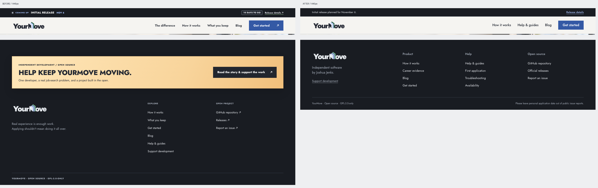
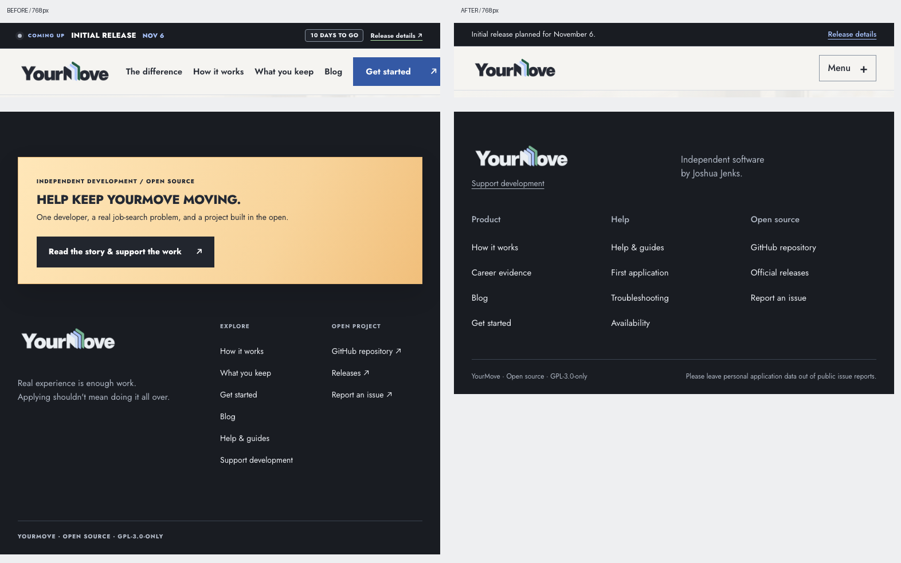
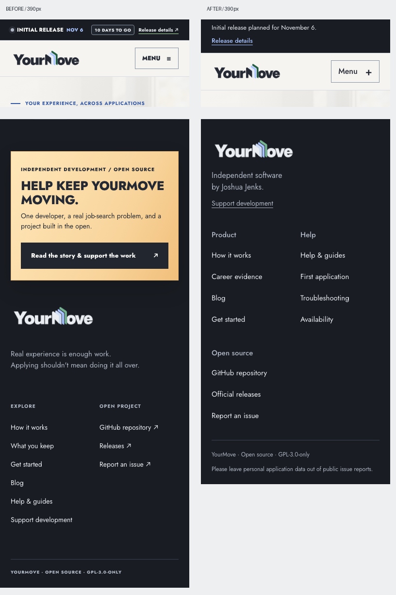
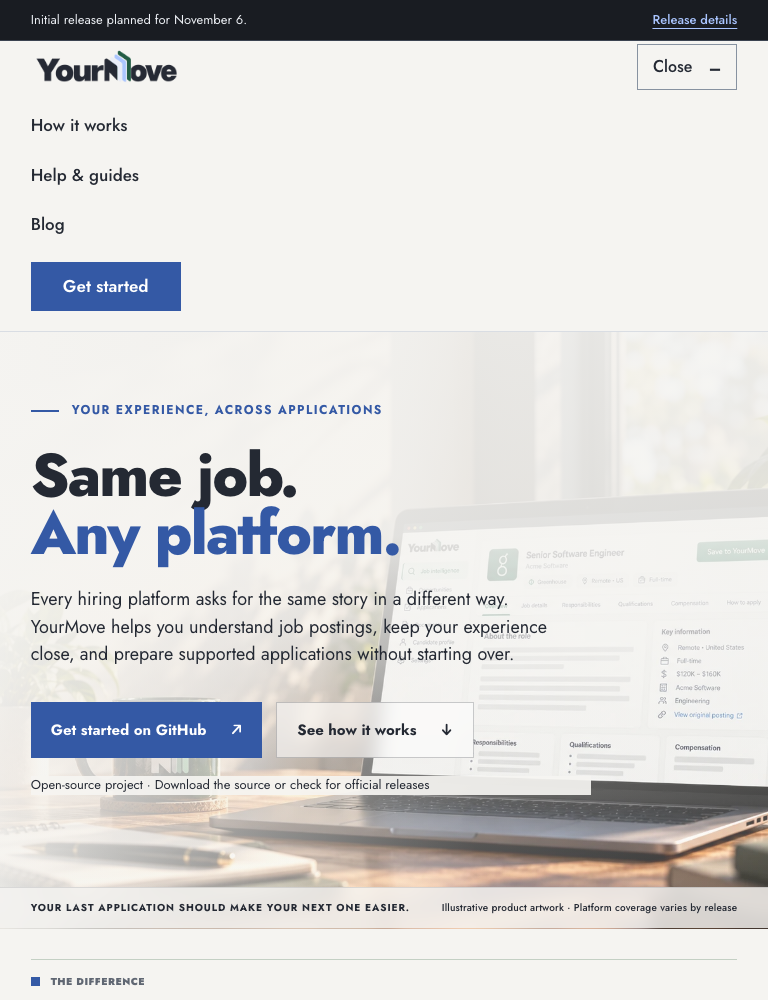
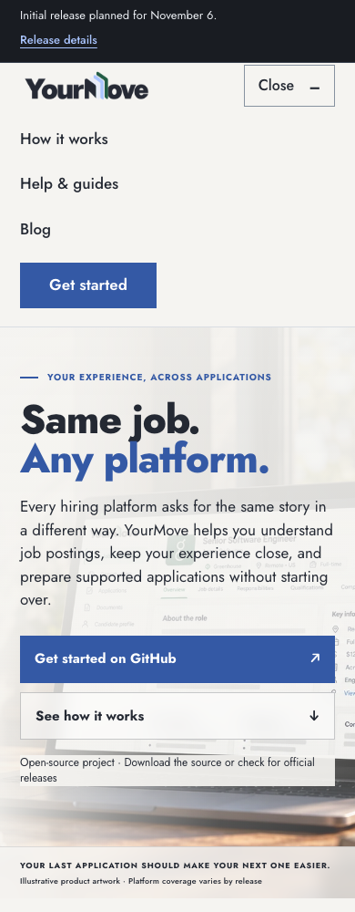

One navigation across 14 routes. Direct access to help, a useful footer, and a planned release date without countdown pressure.
Open the working preview · Navigation checks · Existing served-site checks





Deferred: homepage rail repetition, oversized slogans, dense mock-interface labels, and long runs of alternating sections. These need content composition work in Wave 4.